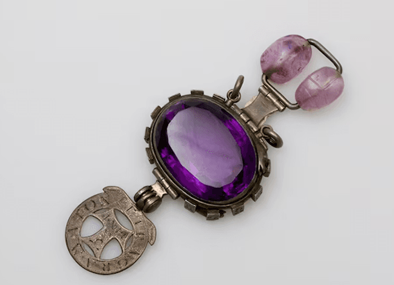

NATIONAL GEOGRAPHIC
Largetooth sawfish
ANIMAL
What is the largetooth sawfish?
The largetooth sawfish is one of five species of sawfish rays that have chainsaw like snouts called rostrums. This species once swam in warm waters around the world, showing up in many cultures. Mainly because of fishing, the species is now critically endangered.
Diet and hunting
This shark-like fish is a predator. As they grow up, they feast on crustaceans, like prawn, and eventually fish. Sawfish use their rostrums to activate a “sixth sense” that detects electric fields. Thousands of tiny pore-like organs in their snouts enable them to pick up the presence of their prey, as all living organisms are surrounded by invisible electric fields. This is called a “distant touch.” Because they don’t rely on sight; they hunt at night.
The largetooth sawfish kills its prey by dismemberment: It moves its rostrum back and forth like an actual saw, stunning and killing it. It also uses this weapon when it encounters the few predators it has, like sharks and saltwater crocodiles.
Reproduction and growth
Adult largetooth sawfish can grow to over 20 feet long. They reach adulthood at 10 years old and live to be roughly 35 years old. Because of their slow growth and low reproduction rate each litter produces seven to nine pups—their population growth is low. Pups are born covered in a soft tissue so as not to harm the mother, and mating likely occurs in the summer.
Habitat and range
Largetooth sawfish can tolerate a range of salinities, or salt levels. Due to this flexibility, they’ve historically been found in tropical and subtropical waters around the world anywhere the waters are warm. They can be found anywhere from freshwater rivers to salty coastlines. These choice spots are estuarine, meaning the rivers are directly connected to the ocean. Largetooth sawfish have a tendency to live in rivers while they are young, then move out to sea as they mature.
The species used to be found from the Gulf of Mexico all the way down the Atlantic coast of Central and South America, including the Caribbean. It was also historically found on the other side of the Atlantic, along the coast of West Africa. In the Indian Ocean, the species used to be found from the Horn of Africa to India, throughout Southeast Asia, and over to northern Australia.
Their numbers have dropped so much, however, that their range is very limited: In the western Atlantic, to freshwater systems Nicaragua, Costa Rica, and Guatemala, as well as the Amazon estuary; and in the eastern Atlantic, to a group of islands off Guinea-Bissau and maybe the Congo River Basin. Northern Australia, however, is where the species is surviving best.
Threats to survival
Their long rostrums, while an effective tool for hunting and defense, also make them vulnerable, as they’re easily entangled in fishing gear. Accidentally getting caught in fishing nets targeting other fish is one of the biggest threats they face today.
Intentional fishing for their parts is another threat. They are targeted for everything from their skin for luxury fashion to their fins for shark-fin soup to medicine and weaponry. Their fins, meat, organs, skin, rostrums, and teeth are all part of the illegal international trade in largetooth sawfish parts.
They are also losing livable habitat to human development: damming, mining (especially underwater), construction of buildings and transportation, and the pollution that comes from these activities. Climate change is also shrinking available habitat.
They were once present in 75 countries but are now known to exist in only 20. Exact numbers are hard to pin down, but it’s clear their population has dropped dramatically in the past few decades. They are listed as critically endangered by the International Union for the Conservation of Nature.
Comments :
- john Very good
- john Very good
Leave a Reply
Your email address will not be published. Required fields are marked*
Related posts:
-
Was Napoleon even short Inside the history of discrimination against short men
How much do you make? How desirable is your spouse? How are you perceived? Your height could play a role in all these questions and more. Modern civilization is notoriously biased about height, heaping praise and privilege
View article -
Who gets to claim the ‘world’s richest shipwreck’
Recent news reports that the president of Colombia hopes soon to recover treasure from the San José treasure galleon have brought new attention to the much-disputed wreck, which is often described as “the world’s richest.”
View article -
This legendary gemstone is real but was it actually cursed
In Anthony Doerr’s bestselling novel All the Light We Cannot See, the chaos of World War II is reflected in the eyes of the book’s blind heroine and represented by a shimmering, supposedly cursed gemstone at the heart of the story
View article